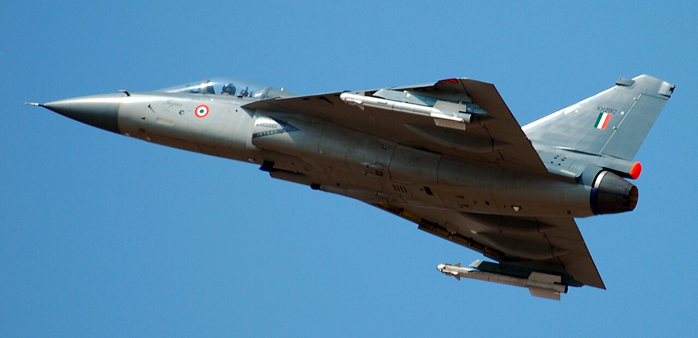

Defence · Air Power
Wings of the Republic: India's Long Struggle to Build Its Own Air Power

An air force is the most unforgiving of the armed services. An army can absorb a bad decade and recover; a navy's ships last for forty years and forgive slow procurement. But air power is perishable, technological and merciless. A fighter fleet that is allowed to age becomes obsolete not gradually but suddenly, overtaken by a single generational leap in radar, missiles or stealth. Squadrons that are not replaced on schedule simply vanish from the order of battle as their aircraft reach the end of their airframe lives. And a nation that cannot build its own fighters remains, in the most literal sense, unable to defend its own skies without permission.
India knows all of this, and has known it for half a century. The Indian Air Force is one of the largest in the world, a service with a proud combat record, superb pilots and real strategic weight. And yet it is shrinking — sanctioned for a strength of squadrons it has not reached in years and may not reach for many more, flying some aircraft older than the pilots who fly them, waiting for indigenous fighters that have taken decades to mature and imported ones that arrive slowly and expensively. Behind this paradox lies one of the great unfinished projects of the Indian republic: the struggle to build, at home, the wings on which its security in the air depends. This is the story of that struggle — its history, its heartbreaks, its slow and hard-won successes, and the race now under way to close the gap before it becomes a danger.
The squadron crisis
Begin with the number that haunts every discussion of Indian air power: the squadron strength of the Indian Air Force. A fighter squadron is the basic building block of an air force — a unit of some eighteen or so aircraft with its pilots, ground crew and support. India's government long ago sanctioned the Air Force a strength of around forty-two fighter squadrons, the figure deemed necessary to fight a two-front war against China and Pakistan simultaneously while holding a reserve. For years, the Air Force has operated well below that number, and the figure has been trending in the wrong direction as old aircraft retire faster than new ones arrive.[1]
The arithmetic is brutal and simple. Every year, squadrons of ageing aircraft reach the end of their service lives and must be retired; the venerable MiG-21, which served India for six decades, has been progressively phased out, taking whole squadrons with it. To hold steady, the Air Force must induct new squadrons at least as fast as it retires old ones; to grow toward its sanctioned strength, it must induct them faster still. For years it has managed neither, because the indigenous fighters have been slow to mature and the imported ones have come in trickles. The result is a fighting force that is smaller than its own government judges necessary, at a time when its potential adversaries are growing larger and more capable.
This is not an abstract accounting problem. Squadron strength translates directly into what an air force can do in war — how many targets it can strike, how much airspace it can defend, how long it can sustain operations before attrition grinds it down. An air force fighting below its required strength must make hard choices, concentrating where it can and accepting risk elsewhere, and in a two-front scenario the shortfall becomes acute. The squadron crisis is, in a real sense, the central fact of contemporary Indian air power — the problem around which everything else revolves, and the spur behind the entire drive to build and buy fighters faster.
Why air power decides
To understand why the squadron shortfall matters so much, one must understand what air power does in modern war, for it is easy to underestimate from the ground. Control of the air is the precondition for almost everything else a military does. An army that fights beneath a hostile sky is an army whose every movement is watched, whose columns can be struck from above, whose supply lines are vulnerable and whose freedom of action is crippled. A navy without air cover is a fleet of targets. The side that wins the air battle can strike the enemy's forces, infrastructure and command with relative freedom while denying him the same — a decisive advantage that shapes the whole course of a conflict.[2]
Air power is also the instrument of reach and speed. A fighter can strike a target hundreds of kilometres away within minutes of the order being given, deliver precision munitions against the most valuable and heavily defended objectives, and return to fight again the same day. It provides the reconnaissance that lets commanders see, the air defence that protects cities and forces from attack, and the flexibility to concentrate force at the decisive point faster than any other arm. In the compressed, fast-moving conflicts of the modern age, the tempo that air power provides is often the difference between victory and stalemate.
This is why the erosion of India's fighter strength is a strategic concern of the first order, and why the Air Force fights so hard for every squadron. In a future war, particularly a two-front one, the ability to control the air over the decisive theatres, to strike the enemy's forces and to protect one's own, could determine the outcome — and an air force operating well below its required strength enters such a contest at a disadvantage it can ill afford. The stakes of the fighter question are, ultimately, the stakes of war itself.
The long shadow of dependence
India's air-power predicament has deep historical roots in a dependence on foreign fighters that goes back to the founding of the republic. For most of its history, the Indian Air Force flew imported aircraft — British in the early years, then, for decades, overwhelmingly Soviet and Russian. The MiG series, the Sukhois, and a scattering of French and British types formed the backbone of the force, bought abroad because India could not build its own. This dependence brought capable aircraft, but it also brought all the burdens of importing one's arsenal: the vulnerability to a supplier's decisions, the premium prices, the delays, and above all the failure to develop the industrial capacity to design and build fighters at home.[3]
The Soviet relationship, in particular, shaped the Indian Air Force profoundly. For decades the Soviet Union was a willing supplier of advanced aircraft on generous terms, and India built much of its force around Soviet designs, often assembling or licence-producing them domestically. This provided capability and some manufacturing experience, but licence production is not the same as indigenous design — building someone else's aircraft to their blueprints teaches manufacturing but not the deeper art of creating a fighter from scratch. When the Soviet Union collapsed, India was left with a large fleet of Russian-origin aircraft, a continuing dependence on Russia for spares and support, and still no proven ability to design and build a modern fighter of its own.
The lesson India drew, slowly and at great cost, was that true air-power sovereignty required the ability to build its own fighters — that a nation which imports its combat aircraft can never fully control its own destiny in the air. This conviction drove the long and difficult effort to develop indigenous fighters, an effort that would test the limits of Indian science, industry and patience over decades. The story of the Tejas, and of the ambitions that followed it, is the story of India's attempt to escape the long shadow of dependence and to build, at last, its own wings.
The MiG-21 and the end of an era
No aircraft symbolises both the achievements and the perils of India's air-power history more than the MiG-21. Inducted in the 1960s, this Soviet-designed fighter became the mainstay of the Indian Air Force for generations, serving in every major conflict and equipping dozens of squadrons across six decades of service. It was fast, cheap and, in its day, formidable, and India operated more MiG-21s than almost any other nation, licence-producing them domestically and flying them long after their original designers had retired them.[1]
But the MiG-21's very longevity became a problem. An aircraft designed in the 1950s, flown into the twenty-first century, was by the end hopelessly outclassed by modern fighters, and its ageing airframes and systems made it increasingly dangerous to fly. The type suffered a troubling accident record in its later years, earning grim nicknames and claiming the lives of pilots, a consequence of flying obsolescent aircraft for decades because the replacements were not ready. The MiG-21 came to embody the cost of the squadron crisis — a fleet kept in service far too long because there was nothing to replace it.
The progressive retirement of the MiG-21 fleet, and of other ageing types, is the immediate driver of the squadron shortfall. Each retired squadron leaves a gap that the slow induction of new aircraft has struggled to fill, and the end of the MiG-21 era, however overdue on grounds of safety and capability, has sharpened the numbers crisis. The MiG-21's long service was a testament to its durability and to the skill of the pilots who flew it, but its final years were a warning — a warning that an air force which cannot replace its ageing aircraft in time will pay the price in obsolescence, in risk, and in shrinking strength.
The Rafale: capability bought at a premium
Facing the widening gap, India turned to the international market for a stopgap of genuine quality, and the result was the acquisition of the Rafale, a French-built multirole fighter of the latest generation. The Rafale is a superb aircraft — agile, well-armed, equipped with advanced radar and electronic warfare, and capable of the full range of air-to-air and air-to-ground missions. Its induction gave the Indian Air Force a real leap in capability at the high end, a fighter that could match or exceed anything its regional rivals fielded.[4]
But the Rafale saga also illustrated the limits of buying one's way out of the fighter problem. The number of Rafales acquired was relatively small — enough to equip a couple of squadrons, a valuable addition but far from sufficient to solve the strength crisis. The aircraft were expensive, as top-tier imported fighters always are, and the acquisition became entangled in domestic political controversy over its cost and terms. And, being imported, the Rafales came with the familiar dependencies — reliance on France for support, upgrades and, ultimately, permission to modify or expand the fleet.
The Rafale, in short, was a plug for one hole in a leaking dyke, not a solution to the underlying problem. It gave the Air Force badly needed high-end capability and demonstrated India's willingness to buy quality when the strategic need was acute. But two squadrons of an expensive imported fighter could not reverse the strength crisis, restore self-reliance, or substitute for the indigenous fighters India needed to build in numbers. The Rafale bought time and capability at a premium; the deeper answer had to come from India's own factories, and that answer had been in the making, slowly and painfully, for decades.
Tejas: the forty-year fighter
The centrepiece of India's indigenous air-power ambition is the Tejas, the Light Combat Aircraft, and its story is a parable of both the difficulty and the eventual reward of building a fighter from scratch. The programme to develop an indigenous light fighter to replace the MiG-21 began in the 1980s, born of the recognition that India must learn to build its own combat aircraft. What followed was one of the longest fighter-development sagas in aviation history — decades of design, testing, setbacks and slow progress before the aircraft entered meaningful service.[5]
The reasons for the long gestation were many and instructive. Designing a modern fighter is one of the most demanding engineering undertakings a nation can attempt, integrating aerodynamics, propulsion, avionics, materials and weapons into a coherent whole that must perform at the edge of the possible. India was attempting this largely from scratch, building the design skills, the testing infrastructure and the industrial base even as it developed the aircraft. Sanctions at various points cut off access to foreign technology and forced indigenous solutions. And the programme suffered the delays and diffusion of responsibility that have afflicted many Indian defence projects, stretching a development that might have taken a decade into something far longer.
Yet it would be a profound mistake to see the Tejas saga as merely a story of delay, for the aircraft that finally emerged is a genuine achievement, and the capability India built in creating it is more valuable still. The Tejas is a modern, capable light fighter — agile, equipped with a sophisticated fly-by-wire flight control system, a modern radar and avionics, and the ability to carry a range of weapons. More importantly, in building it India developed, at last, the ability to design and build a fighter at home, accumulating the skills, the infrastructure and the confidence that no amount of importing could ever provide. The Tejas took forty years not only to build an aircraft but to build the capability to build aircraft — and that capability is the true prize.
The Mk1A and the ramp-up
The Tejas entered service in stages, and the version that matters most for the squadron crisis is the improved Tejas Mk1A, an upgraded variant with better radar, electronic warfare, weapons and maintainability, ordered in substantial numbers to begin replacing the retiring MiGs and to arrest the decline in squadron strength. The Mk1A represents the maturation of the Tejas from a development programme into a production fighter that the Air Force can field in quantity, and large orders for it signal a commitment to make the indigenous fighter the backbone of the force's lower and middle tier.[5]
But production is its own challenge, distinct from development, and here the Tejas has run into the hard reality of India's aerospace manufacturing capacity. Building fighters in quantity requires a production line that can turn out aircraft at a steady, sustained rate, and ramping up that capacity — with all its supply chains, skilled labour and quality control — has proven difficult. The pace of Tejas deliveries has at times lagged behind what the Air Force needs to reverse the squadron decline, a bottleneck complicated further by dependence on imported components, most critically the engine.
The stakes of the production ramp-up are high, because the Tejas Mk1A is central to the near-term answer to the squadron crisis. If deliveries can be accelerated to a steady, high rate, the indigenous fighter can begin to fill the gaps left by the retiring MiGs and stabilise the force's strength. If they cannot, the crisis will persist, and India will remain dependent on expensive imports and an ageing fleet. Getting the Tejas into service in numbers, fast, is thus one of the most urgent tasks in Indian defence — and it depends not only on the aircraft's undoubted qualities but on the far more prosaic challenge of building it quickly enough.
The engine that India could not build
At the heart of the Tejas story, and of India's air-power predicament more broadly, lies a single stubborn failure that deserves its own reckoning: the jet engine. A modern fighter's engine is among the most difficult pieces of technology any nation can attempt to build — a device in which a small number of components must survive temperatures hotter than the melting point of the metals they are made from, spinning at enormous speeds under crushing stress, for thousands of hours, with absolute reliability. Only a handful of nations have ever truly mastered it, and the knowledge is guarded as among the most sensitive any country possesses.[6]
India tried to build its own fighter engine, through the Kaveri programme, and for decades it struggled. Despite enormous effort, the Kaveri failed to produce an engine that could reliably power the Tejas, falling short of the performance the fighter required and forcing India to rely on an imported engine instead. The Kaveri became a symbol of the one technological summit India had not been able to climb — the gap at the very heart of its indigenous fighter, the component that no amount of national effort had yet been able to master. A country that could design the airframe, the avionics and the flight controls of a modern fighter still could not build its engine.
This engine dependence is more than a technical footnote; it is a strategic vulnerability and a limit on self-reliance. A fighter powered by an imported engine is a fighter whose most critical component can be cut off by a foreign supplier, whose production depends on the flow of engines from abroad, and whose export is constrained by the supplier's permission. This is precisely why the prospect of jointly producing an advanced fighter engine in India, with a substantial transfer of technology, has become so significant — the possibility of finally closing the gap, of powering India's indigenous fighters with engines built at home. Mastering the engine would remove the last great limit on India's air-power sovereignty, and it is among the most important technological goals the country has set itself.
The Mk2 and the medium-weight leap
Beyond the light Tejas lies a more ambitious indigenous fighter: the Tejas Mk2, sometimes called the Medium Weight Fighter, a larger, more powerful and more capable aircraft intended to fill the crucial middle tier of the Air Force between the light Tejas and the heavy imported fighters. The Mk2 is designed to carry more weapons over greater range, with more advanced systems, representing a substantial step up in capability and a further maturation of India's fighter-design ability.[5]
The significance of the Mk2 is that it aims squarely at the category of fighter India has historically imported — the medium multirole aircraft that forms the workhorse of a modern air force. If India can build the Mk2 successfully and in numbers, it can begin to replace imported medium fighters with an indigenous design, deepening self-reliance and reducing the dependence on foreign suppliers for the bulk of its combat fleet. The Mk2 is thus a bridge between the light Tejas and the fifth-generation ambitions beyond, a fighter that could carry much of the burden of the force's middle tier for decades.
The Mk2 also embodies the cumulative logic of India's fighter programmes: each generation builds on the skills and infrastructure of the last. The design experience, the testing capability, the industrial base and the confidence accumulated through the long Tejas development flow into the Mk2, allowing it to progress faster than its predecessor did from a standing start. This is the hidden dividend of the forty-year Tejas saga — that having learned, at great cost, to build a fighter, India can build the next one more quickly, and the one after that more quickly still. The Mk2 is the proof of that principle, and the foundation for the stealth ambitions that lie beyond.
AMCA: the stealth ambition
The most ambitious project in Indian aviation is the Advanced Medium Combat Aircraft, the AMCA — India's bid to design and build a fifth-generation stealth fighter, joining the tiny group of nations able to produce the most advanced combat aircraft in the world. A fifth-generation fighter is defined by a combination of features that together represent the cutting edge of air power: stealth to evade radar detection, advanced sensors and computing, the ability to carry weapons internally to preserve stealth, and the capacity to fuse information and operate as a node in a networked battle.[7]
The AMCA aims to give India this capability indigenously, and its significance is enormous. Only a handful of nations — the United States, Russia, China — have fielded fifth-generation fighters, and the technology represents the frontier of air power. China's fielding of stealth fighters, in particular, has sharpened India's need for a comparable capability, since an adversary with stealth aircraft that can penetrate defences undetected holds a formidable advantage. The AMCA is India's answer — an attempt to ensure that it is not left a generation behind in the most advanced category of combat aircraft.
Building a fifth-generation fighter is, however, an undertaking of extraordinary difficulty, at the very limit of what aerospace engineering can achieve, and it will test India's capabilities as nothing before it has. Stealth requires mastering the shaping, materials and design that reduce an aircraft's radar signature; the advanced sensors and computing demand cutting-edge electronics; and the whole must be integrated into a coherent, high-performance aircraft — and powered, once again, by an engine of the kind India has struggled to build. The AMCA is a long-term project whose success is not guaranteed, but its ambition is the right one: to place India, in time, among the nations that can build the most advanced fighters in the world, and to secure its air-power sovereignty for the generation of stealth.
The MRFA question
Running alongside the indigenous programmes is a long-debated plan to import a large number of foreign fighters to plug the gap in the near term — the Multi-Role Fighter Aircraft acquisition, a proposal to buy well over a hundred medium fighters, most of them built in India under licence with technology transfer. The MRFA reflects the hard reality that the indigenous fighters, however promising, may not arrive in sufficient numbers fast enough to reverse the squadron crisis on their own, and that a substantial injection of proven foreign aircraft may be needed to stabilise the force.[3]
The MRFA has been debated for years, entangled in questions of cost, choice of aircraft, and the balance between importing and building at home. It embodies the central tension of Indian air-power policy: the need for capability now, which imports can provide fastest, against the goal of self-reliance, which requires building at home even if more slowly. The proposal to build the imported fighters in India under licence, with technology transfer, is an attempt to reconcile the two — to gain aircraft in numbers while also deepening the domestic industrial base and learning from foreign designs.
Whether and how the MRFA proceeds will shape Indian air power for decades. A large licence-production programme could stabilise the force's strength, bring advanced manufacturing know-how, and buy time for the indigenous fighters to mature. But it would also be expensive, would deepen dependence on the chosen foreign supplier, and would consume resources that might otherwise accelerate the indigenous programmes. The MRFA question has no easy answer, and it sits at the heart of India's struggle to balance the urgent need for fighters now against the long-term imperative of building its own — a balance that will determine how India closes the gap between its shrinking fleet and its growing threats.
The manufacturing bottleneck
Beneath all the debates about which fighters to build and buy lies a more fundamental constraint: India's capacity to actually manufacture combat aircraft at the pace it needs. The state-owned aerospace giant that has anchored Indian fighter production for generations has genuine capabilities, but it has also been a bottleneck, criticised for a pace of production that struggles to meet the Air Force's demands and for the delays that have afflicted programmes from the Tejas onward. Building fighters fast, in quantity, with consistent quality, requires production capacity that India is still working to expand.[5]
Recognising this, India has moved to broaden its aerospace manufacturing base, drawing in the private sector and building the supply chains and skilled workforce that high-rate fighter production requires. The logic mirrors the reform of the broader defence industry: that competition, private capital and additional capacity can accelerate and enlarge what a single state-owned firm could achieve alone. Expanding the industrial base to build fighters faster is as important as designing the fighters themselves, for the finest aircraft is of little use if it cannot be produced in the numbers and at the speed the Air Force needs.
The manufacturing challenge extends to the entire ecosystem of fighter production — the thousands of components and subsystems, the materials, the engines, the avionics, the weapons, many of which India still imports. Building a truly self-reliant fighter industry means developing this whole ecosystem, not just the final assembly, and that is the work of decades. The manufacturing bottleneck is, in the end, the practical crux of India's air-power ambition: the country's ability to build its own wings depends not only on the brilliance of its designers but on the far less glamorous capacity of its factories to produce, at scale and speed, the fighters those designers create.
Unmanned wingmen and the future cockpit
Even as India races to build conventional fighters, the nature of air power is shifting beneath its feet, and the country is moving to be part of that shift. The future of air combat increasingly involves unmanned systems working alongside manned fighters — drones that can scout ahead, absorb the first blows, carry extra weapons, and multiply the effect of each piloted aircraft. India has pursued the development of such systems, including concepts for stealthy unmanned combat aircraft and "loyal wingman" drones designed to fly alongside fighters and extend their reach.[2]
The logic of these unmanned companions is compelling, especially for an air force facing a shortage of fighters. If each manned fighter can be teamed with several unmanned aircraft — cheaper, expendable, controlled by the pilot or operating semi-autonomously — the effective combat power of the force multiplies without a corresponding increase in expensive manned aircraft and scarce pilots. Unmanned wingmen can take on the most dangerous tasks, penetrate defended airspace, and present an adversary with more threats than he can handle, all while keeping human pilots further from harm.
This points toward a future in which air power is a blend of manned and unmanned systems, networked together, in which the pilot becomes as much a manager of a team of aircraft as the operator of a single one. India's investment in unmanned combat systems, alongside its manned fighters, is an attempt to be ready for this future rather than a prisoner of the past — to ensure that as the character of air power changes, India changes with it. Combined with the drones and swarms it is developing for other roles, this unmanned dimension may, in time, help offset the shortage of manned fighters and reshape how India fights in the air.
Arming the fighters: the weapons dimension
A fighter is only as effective as the weapons it carries, and here India has made significant strides toward self-reliance that complement its aircraft programmes. The country has developed indigenous air-to-air missiles, most notably the Astra, a beyond-visual-range missile that lets Indian fighters engage enemy aircraft at long distances — a crucial capability in modern air combat, where the first side to detect and shoot often wins. Developing such missiles at home reduces dependence on imported weapons and ensures that Indian fighters can be armed without foreign permission.[6]
The weapons effort extends across the spectrum. India has integrated its formidable BrahMos cruise missile in an air-launched version onto its heavy fighters, giving them a long-range precision strike capability of great power. It has developed precision-guided munitions, glide bombs and other air-to-ground weapons that let its fighters strike targets accurately from a distance. And it continues to develop the sensors, targeting systems and electronic warfare that make modern air combat possible. Building these weapons at home is as important as building the aircraft, for a fighter dependent on imported missiles is a fighter whose teeth can be pulled by a supplier.
The weapons dimension illustrates a broader truth about air-power self-reliance: it is not enough to build the aircraft; a nation must build the whole system — the fighter, the engine, the radar, the missiles, the munitions, the electronic warfare — if it is to be truly sovereign in the air. India's progress in indigenous air-launched weapons, alongside its fighter programmes, reflects an understanding of this, and it strengthens the case for the indigenous fighters, which can be armed with indigenous weapons free of foreign constraint. The goal is an air force that can build, arm and sustain its own fighters entirely at home — and while that goal is not yet reached, the weapons effort has brought it closer.
The adversaries across the borders
India's air-power efforts unfold against the backdrop of the capabilities its potential adversaries are building, and understanding that backdrop explains the urgency. To the north, China has developed one of the world's most rapidly advancing air forces, fielding large numbers of modern fighters, including fifth-generation stealth aircraft, along with advanced missiles, sensors and supporting systems. An adversary with stealth fighters, long-range missiles and a large, modernising air force poses a formidable challenge, and the gap between China's air power and India's is a central strategic concern.[7]
To the west, Pakistan has built a capable air force of its own, acquiring modern fighters and advancing its capabilities, often with foreign assistance. While smaller than India's, the Pakistani air force is a serious adversary, and the possibility of a two-front air war — China and Pakistan simultaneously — is the demanding scenario against which India's air-power requirements are set. It is precisely this two-front threat that underlies the sanctioned strength of forty-two squadrons, and it is against this backdrop that the squadron shortfall becomes most worrying.
The comparison with China's air force, in particular, sharpens the case for India's indigenous programmes and its stealth ambition. If India is to hold its own against an adversary fielding advanced and stealthy aircraft in numbers, it must field comparable capabilities of its own — modern fighters in sufficient strength, the AMCA's stealth in time, the weapons and systems to compete. The adversaries across the borders are not standing still; they are growing more capable year by year, and India's air-power efforts are, at bottom, a race to ensure that it can defend its skies and project power against increasingly formidable opponents. The stakes of that race are the security of the nation itself.
The shield: air defence and the missile wall
Air power is not only about the fighters that fly and strike; it is equally about the ground-based systems that defend a nation's skies against an enemy's aircraft and missiles, and here India has invested heavily in building a layered air-defence shield. Modern air defence is a system of systems — long-range surface-to-air missiles that can engage aircraft and missiles at great distances, medium and short-range systems that provide closer protection, and the radars and networks that detect threats and direct the response. Together they form a wall in the sky, denying an enemy the freedom to strike and protecting the nation's cities, forces and vital assets.[2]
India has acquired advanced long-range air-defence systems from abroad, capable of engaging aircraft and missiles at long distances and forming the outer layer of the shield, while also developing indigenous systems to provide the medium and shorter-range layers. The indigenous Akash surface-to-air missile, and a growing family of Indian air-defence systems, provide capabilities that India can build, deploy and sustain on its own terms, reducing dependence on imports for this vital function. The combination of imported long-range systems and indigenous shorter-range ones creates the layered defence that modern air war demands.
The importance of this air-defence shield has only grown in an age of proliferating missiles and drones. As adversaries field more and better missiles and unmanned systems capable of striking from a distance, the ability to detect and destroy these threats before they reach their targets becomes ever more vital, and the air-defence shield becomes a crucial complement to the offensive power of the fighter force. India's investment in layered air defence, combining the best imported systems with a growing indigenous capability, reflects the recognition that controlling the air means not only projecting power into an enemy's airspace but denying him the power to strike into one's own. The shield and the sword are two halves of air power, and India is building both.
The eyes: force multipliers in the sky
Modern air power depends heavily on a category of aircraft that carry no weapons at all but multiply the effectiveness of everything else — the force multipliers, chief among them the airborne early warning and control aircraft that serve as flying radar stations and command posts. These aircraft, orbiting high above the battlefield, can detect enemy aircraft and missiles at great distances, direct friendly fighters to intercept them, and provide a commanding picture of the air situation that no ground radar can match. An air force with such "eyes in the sky" fights with an enormous advantage over one without.[1]
India has invested in these capabilities, acquiring and developing airborne early warning and control aircraft, including indigenous systems that place advanced radar aboard aircraft to extend the reach of Indian air surveillance and control. These flying radars can see far beyond the horizon of ground-based systems, detect low-flying threats that ground radar might miss, and coordinate the air battle across a vast expanse, giving Indian fighters the crucial advantage of seeing first and directing the fight. Developing such systems indigenously is a significant technological achievement and a further step toward self-reliance in the full spectrum of air power.
Alongside the airborne radars, other force multipliers extend India's air power: aerial refuelling tankers that let fighters fly farther and stay airborne longer, dramatically extending their reach and endurance; electronic warfare aircraft that can jam and deceive an enemy's radars and communications; and the intelligence and reconnaissance aircraft that gather the information on which air operations depend. Each of these multiplies the effectiveness of the fighter force, turning a given number of aircraft into a far more capable instrument. India's building of these force-multiplier capabilities, alongside its fighters, reflects an understanding that modern air power is a system, in which the enablers are as important as the fighters themselves.
Reach: refuelling, transport and strategic lift
An air force's power depends not only on its fighters but on its ability to reach and sustain operations across vast distances, and here the transport and refuelling fleet plays a crucial if unglamorous role. Aerial refuelling tankers extend the reach of fighters, allowing them to strike distant targets and patrol far from their bases; strategic transport aircraft move troops, equipment and supplies rapidly across the country and beyond; and the whole logistical air fleet gives the military the mobility to concentrate force where it is needed and to sustain operations far from home.[1]
India operates a substantial fleet of transport aircraft, including large strategic airlifters capable of moving heavy loads over long distances and medium transports for tactical mobility, giving the military the ability to move forces rapidly across India's vast expanse and to its demanding frontiers. This airlift capability proved its value repeatedly in crises — moving troops and equipment to the borders, delivering aid after disasters, evacuating citizens from foreign conflicts — and it is a vital if underappreciated component of national power. The ability to move quickly is often as important as the ability to strike, and the transport fleet provides it.
India has also pursued the indigenous development and production of transport aircraft, seeking to build at home the airlift capability it needs rather than importing it, and has collaborated on transport aircraft programmes to develop domestic capacity. Combined with the aerial refuelling fleet that extends the reach of its fighters, this transport and lift capability gives the Indian Air Force the strategic mobility of a major power — the ability to project and sustain force across great distances, at home and abroad. Reach, as much as striking power, defines a modern air force, and India's investment in the aircraft that provide it reflects the ambitions of a nation whose interests and responsibilities span a vast region.
Rotary wings: the helicopter force
Beyond the fixed-wing fighters and transports lies another vital dimension of air power: the helicopter force, which provides capabilities that no other aircraft can match. Helicopters move troops and supplies to places no runway can reach, evacuate the wounded from the battlefield, provide close support to ground forces, hunt tanks and submarines, and give the military a flexibility and reach into difficult terrain that is indispensable, especially in the mountains and high altitudes where much of India's soldiering takes place.[5]
India has invested in developing indigenous helicopters across the range of military roles, and here its aerospace industry has achieved genuine success. It has built indigenous utility and attack helicopters, including a light combat helicopter designed for the demanding conditions of high-altitude warfare — a capability of particular value given India's mountainous frontiers, where operating helicopters at extreme altitudes is both difficult and essential. The development of such helicopters domestically is a significant achievement and a further dimension of India's growing self-reliance in military aviation.
The helicopter force illustrates a broader point about the breadth of air power, which extends far beyond the glamorous fighters to encompass a whole range of aircraft, each providing capabilities the military cannot do without. Attack helicopters providing firepower to ground forces, utility helicopters moving troops and supplies, helicopters evacuating casualties and hunting submarines — all are part of the air power on which modern operations depend, and India's development of indigenous helicopters across these roles strengthens both its capability and its self-reliance. The rotary-wing force is a quieter but essential part of the wings of the republic.
The combat record: proof in war
India's air power is not merely a matter of aircraft and plans; it has been tested in war, and its combat record provides both a source of pride and a store of lessons. In the wars India has fought — with Pakistan across several conflicts, and in the Kargil conflict of 1999 — air power played significant roles, striking enemy forces, supporting ground operations, and contributing to the outcomes. The Indian Air Force's performance in these conflicts demonstrated the value of air power and the skill of its aircrew, and it shaped the service's doctrine and priorities.[1]
The Kargil conflict, in particular, tested Indian air power in the extraordinarily demanding conditions of high-altitude mountain warfare, where aircraft had to strike enemy positions on some of the highest battlefields on earth. The Air Force adapted its tactics and weapons to the challenge, using precision munitions to strike difficult targets and contributing to the recapture of the heights. The conflict underscored both the value of air power in mountain warfare and the importance of precision weapons and the aircraft to deliver them — lessons that shaped subsequent investment and doctrine.
More recent episodes of tension and limited conflict have continued to test and demonstrate Indian air power, including cross-border strikes that showed the Air Force's ability to project power and respond to provocations. These episodes, and the broader combat record, provide concrete evidence of what air power can do and of the capabilities India possesses, while also revealing gaps and lessons that drive continued improvement. The combat record is a reminder that the debates over fighters and squadrons are not academic — that air power is tested in war, and that the capabilities India builds, or fails to build, have consequences measured in the outcomes of real conflicts.
The aerospace ecosystem
Building air power requires more than designing and manufacturing aircraft; it requires an entire aerospace ecosystem — the network of firms, laboratories, skills and supply chains that together can create, produce and sustain the complex systems that modern aviation demands. India has worked to build this ecosystem, encompassing the state-owned aerospace giant, the research laboratories, and, increasingly, a growing private sector of firms and start-ups contributing components, subsystems and innovation to the aerospace effort.[3]
The development of a broad and capable aerospace ecosystem is essential to genuine air-power self-reliance, for a nation that must import the components and subsystems of its aircraft is only partly self-reliant, however impressive its final assembly. Building the whole ecosystem — the materials, the avionics, the sensors, the engines, the countless components — is the work of decades and requires a thriving industrial base with the skills and capacity to produce at the frontier of aerospace technology. India's effort to build this ecosystem, drawing in the private sector alongside the traditional state firms, is central to its long-term air-power ambitions.
The aerospace ecosystem also connects air power to the broader economy and to the goal of building India as a hub of aerospace manufacturing, both for its own needs and potentially for export. A thriving aerospace industry generates skills, jobs and technology that benefit the wider economy, and it positions India to build not only for itself but for others, exporting aircraft, components and services. The ecosystem is thus both a foundation of air-power self-reliance and an economic opportunity, and its development is among the most important long-term projects underlying India's quest to build its own wings — for the aircraft are only as strong as the industrial base that creates them.
The export ambition takes flight
As India's indigenous aircraft mature, a new possibility has emerged that would have seemed fanciful a generation ago: exporting Indian combat aircraft to other nations. India has offered its indigenous Tejas fighter to foreign air forces, marketing it as a capable and affordable modern fighter, and has pursued the export of helicopters and other aircraft, seeking to become not only a builder of its own air power but a supplier to others.[3]
The significance of aircraft exports extends beyond the commercial, for they would validate India's aerospace capability on the world stage, deepen the industrial base by expanding production beyond domestic needs, and create the strategic relationships that arms sales forge. A nation that exports combat aircraft joins a very select group, and success in exporting the Tejas or other aircraft would mark a further stage in India's transformation from an importer of air power to a genuine aerospace power able to build for itself and others. The export ambition, though still in its early stages, reflects the growing confidence and capability of India's aerospace industry.
The path to becoming a significant exporter of combat aircraft is long and demanding, for the global market is competitive, buyers demand proven performance and reliable support, and reputations are built over decades. But the mere fact that India can offer an indigenous fighter for export is a measure of how far it has come, and success in this endeavour would both strengthen the aerospace industry and advance India's broader ambition to be a provider rather than a consumer of defence capability. The export of Indian wings, like the export of its other weapons, is part of the larger story of a nation building the capability to arm itself and its friends — and it is a story that, slowly, is beginning to take flight.
The two-front air challenge
The demanding scenario against which India's air-power requirements are set is the possibility of a two-front war — conflict with China and Pakistan simultaneously or in close succession — and this scenario shapes everything about the Air Force's strength requirements and force structure. To fight on two fronts, an air force must be able to contest the air, strike the enemy, and defend friendly forces and territory across two widely separated theatres at once, a demand that requires substantial strength, for a force stretched across two fronts must have enough to be effective on each.[3]
This two-front requirement is the reason behind the sanctioned strength of some forty-two squadrons — a figure calculated to provide the strength needed to fight effectively on both fronts while retaining a reserve. It is against this requirement that the squadron shortfall becomes most concerning, for a force operating well below the strength needed for a two-front war enters such a contingency at a serious disadvantage, potentially unable to be strong enough on both fronts at once. The gap between the sanctioned strength and the actual strength is, in effect, a gap in India's ability to fight the most demanding scenario it must plan for.
The two-front challenge also shapes how the Air Force must think about basing, mobility and flexibility, for a force that may need to shift strength between fronts, or fight on both at once, must be able to operate from bases across the country, to move aircraft and support rapidly between theatres, and to concentrate force where it is most needed. The integration of air power into the broader theatre-command reforms, and the development of the infrastructure and flexibility to fight across two fronts, are central to meeting this challenge. The two-front scenario is the demanding standard against which Indian air power is measured, and closing the gap between that standard and the force's actual strength is the central purpose of the whole air-power effort.
The reach of precision: standoff weapons
Modern air power is increasingly defined not only by the aircraft but by the precision weapons they carry and the distances from which they can strike, and here the trend toward standoff weapons — munitions that can be launched from far away, beyond the range of an enemy's defences — has transformed how air forces fight. Rather than flying over a heavily defended target and risking destruction, a modern fighter can launch a precision weapon from a safe distance and let the weapon fly to the target, striking accurately while keeping the aircraft and pilot out of danger.[6]
India has invested in developing and acquiring such standoff precision weapons, giving its fighters the ability to strike targets accurately from a distance — precision-guided munitions, glide bombs that can be released far from the target and glide to it, and long-range missiles including the formidable air-launched version of the BrahMos cruise missile. These weapons multiply the effectiveness of the fighter force, allowing it to strike valuable and heavily defended targets with precision while minimising the risk to aircraft and aircrew, and their development at home strengthens India's self-reliance in the full system of air power.
The importance of these weapons connects to the broader nature of modern air combat, in which the ability to strike accurately from a distance often determines success, and in which the side with better standoff weapons holds a significant advantage. An air force with precise, long-range weapons can strike the enemy's forces and infrastructure with devastating effect while remaining beyond the reach of his defences, and India's investment in such weapons is essential to making its fighters truly effective. The reach of precision — the ability to hit hard and accurately from afar — is central to contemporary air power, and building these weapons at home is as important as building the aircraft that carry them.
Basing and survivability
An air force's aircraft are vulnerable when they are on the ground, and the security and survivability of air bases is a crucial if often overlooked dimension of air power, particularly in an age of precision missiles and drones that can strike an enemy's airfields. Aircraft destroyed on the ground are as lost as those shot down in the air, and an enemy who can strike an air force's bases — cratering runways, destroying parked aircraft, hitting fuel and munitions — can cripple that air force without ever meeting it in combat. Protecting air bases is therefore essential to preserving air power.[2]
India has worked to enhance the survivability of its air bases through measures such as hardened shelters that protect parked aircraft from attack, the dispersal of aircraft across multiple bases to avoid concentrating them as targets, air and missile defences to protect the bases, and the ability to repair damaged runways quickly. These measures aim to ensure that Indian air power can survive an enemy's opening strikes and continue to operate, for an air force whose bases are vulnerable is an air force that could be neutralised on the ground before it can fight. The security of the bases is the foundation on which the fighting power of the aircraft rests.
The importance of base survivability has grown with the proliferation of the precise, long-range weapons that adversaries can use to strike airfields, and it connects to the broader challenge of defending against missiles and drones. As the threat to air bases grows, so does the importance of the measures that protect them — the shelters, the dispersal, the defences, the rapid repair — and India's investment in these unglamorous but essential capabilities is part of ensuring that its air power can survive and fight in a real war. The strength of the fighter force means little if the aircraft can be destroyed on the ground, and the survivability of the bases is thus a crucial and often underappreciated dimension of air power.
Training the next generation
The excellence of India's pilots and the effectiveness of its air power depend on a training system that produces skilled aircrew and keeps them sharp, and this training infrastructure is a vital if less visible foundation of air power. Training a fighter pilot is a long, demanding and expensive process, requiring years of instruction and practice to develop the skill, judgment and airmanship that combat demands, and maintaining those skills requires continual training throughout a pilot's career. The quality of this training system directly shapes the quality of the air force.[1]
India has invested in the aircraft, simulators, ranges and instruction that pilot training requires, developing indigenous trainer aircraft to teach new pilots the basics before they progress to advanced aircraft, and building the simulators and facilities that allow realistic training without the cost and risk of flying. Modern simulation, in particular, allows pilots to practise demanding and dangerous scenarios safely and repeatedly, enhancing their skills and readiness, and India's investment in these training tools strengthens the foundation of its air power. The development of indigenous trainer aircraft also advances self-reliance across the full spectrum of aviation, from trainers to frontline fighters.
The training system connects to the broader challenge of sustaining air power over time, for an air force is only as good as the continuous stream of skilled aircrew it produces and the maintenance of their skills throughout their careers. Realistic training, including exercises against other air forces that test Indian pilots against different tactics and aircraft, keeps the force sharp and reveals lessons for improvement, and India's participation in such exercises has repeatedly demonstrated the quality of its aircrew. Investing in the training system is investing in the human foundation of air power, and it is as essential to the Air Force's effectiveness as any aircraft programme — for the finest aircraft are only as good as the pilots who fly them, and the pilots are only as good as the training that forms them.
The pilots and the human edge
Amid all the focus on aircraft, it is worth remembering that air power ultimately depends on people — on the pilots who fly the fighters and the ground crews who keep them flying. Here India has a genuine and hard-won strength: the Indian Air Force has long been renowned for the quality of its pilots, whose skill and training have repeatedly proven a match for anyone. In exercises against the air forces of other nations, Indian pilots have performed superbly, demonstrating that the human edge — the training, the airmanship, the tactical skill — remains a decisive factor even in an age of advanced technology.[1]
This human strength matters enormously, because aircraft, however advanced, are only as good as those who fly them. A superbly trained pilot in a good aircraft can defeat a poorly trained one in a better aircraft; the quality of training, tactics and airmanship can offset material disadvantages and multiply material advantages. India's investment in pilot training, in realistic exercises, and in the professional development of its aircrew is thus as important to its air power as any fighter programme, and the excellence of its pilots is one of the Air Force's most valuable assets.
Yet the human edge cannot indefinitely compensate for material shortfalls, and this is the sober truth behind the squadron crisis. Superb pilots in too few aircraft, or in aircraft outclassed by an adversary's, face a disadvantage that skill alone cannot overcome; there is a limit to what airmanship can do against overwhelming numbers or a decisive technological gap. The excellence of India's pilots makes the case for giving them the aircraft they deserve — modern fighters in sufficient strength — all the more compelling. The human edge is real and valuable, but it must be matched by the material means, and ensuring that India's superb aircrew have the fighters worthy of their skill is the ultimate purpose of the whole air-power effort.
The race against the timeline
Everything in India's air-power story comes down, in the end, to a race against time — the race to induct new fighters faster than old ones retire, to close the gap between the shrinking fleet and the growing threats, before the shortfall becomes a danger in a real crisis. This timeline crunch is the defining challenge, and it explains the urgency behind every element of the effort: the push to accelerate Tejas production, the debate over importing fighters, the ambition of the AMCA, the drive to expand manufacturing capacity.[3]
The danger of the timeline is that capability, once lost, is slow to rebuild. If the squadron strength falls too far, and stays low for too long, India could find itself in a period of genuine vulnerability — an air force below the strength needed to fight a two-front war, at a time when its adversaries are more capable than ever. The indigenous fighters and the imported ones both take years to field in numbers, and there is no quick fix; the gap that has opened over years will take years to close, and the intervening period is one of strategic risk.
This is why the coming years are so critical for Indian air power. The decisions made now — how fast to build the Tejas, whether and how to import fighters, how quickly to develop the AMCA and its engine, how much to invest in expanding manufacturing — will determine whether India closes the gap in time or endures a prolonged period of dangerous weakness. The race against the timeline admits of no complacency, and the stakes could not be higher: the ability of the Indian Air Force to defend the nation's skies in the wars it may one day have to fight.
The horizon: the future of air combat
Even as India races to field the fighters it needs today, the character of air combat continues to evolve, and the country must keep one eye on the horizon of technologies that will define air power in the decades ahead. The world's leading air powers are already looking beyond the current generation of stealth fighters toward sixth-generation concepts — aircraft that may combine advanced stealth, artificial intelligence, control of teams of unmanned aircraft, directed-energy weapons, and networking of a sophistication beyond anything yet fielded. The frontier of air power does not stand still, and a nation that reaches today's frontier only to stop will find itself behind tomorrow's.[7]
For India, this evolving horizon poses both a challenge and an opportunity. The challenge is that even as it struggles to field current-generation fighters and to develop its fifth-generation AMCA, it must invest in the technologies and concepts that will define the next generation, lest it fall behind again just as it catches up. The opportunity is that some of these emerging technologies — artificial intelligence, unmanned systems, directed energy, networking — play to India's strengths, particularly its formidable software and technology talent, and offer the chance to leap forward rather than merely to catch up. The manned-unmanned teaming that India is developing, in which fighters control teams of drones, is precisely the kind of concept that will shape future air combat, and India's investment in it positions it to be part of the next generation rather than a prisoner of the last.
The lesson of the whole air-power story is that sovereignty in the air is not a destination reached once but a frontier that must be pursued continually, for air power is defined by technology, and technology never stops advancing. India's task is not only to close today's gap — to field the fighters, master the engine, and build the AMCA — but to keep pace with the evolving frontier, to invest in the technologies of the future, and to ensure that having caught up, it does not fall behind again. This requires sustained investment, a thriving aerospace ecosystem, and a talent base able to innovate at the frontier — the same foundations that underlie all of India's air-power ambitions. The horizon of air combat is always receding, and the pursuit of it is the permanent condition of a nation determined to control its own skies.
The long road to sovereignty in the air
Step back from the immediate crisis, and the larger story of Indian air power is one of a long, difficult, but genuinely progressing march toward sovereignty in the air. Half a century ago, India could build no fighters at all, dependent entirely on foreign suppliers for the aircraft that defended its skies. Today it builds the Tejas, is developing the Mk2 and the stealthy AMCA, produces indigenous air-to-air missiles and precision weapons, and is working to close the last great gap of the engine. The progress has been slower than hoped and bought at great cost, but it is real, and it is cumulative.[5]
The frustration of the air-power story — the squadron shortfall, the delays, the engine that would not come — is real and must not be minimised, for it reflects genuine failures and genuine strategic risk. But the achievement is real too, and easily underestimated: India has joined the small group of nations able to design and build modern fighters, has accumulated the industrial and design capability that makes each new aircraft easier than the last, and has set its sights on the frontier of stealth. The forty years of the Tejas were the price of learning to build fighters at all; the aircraft that follow will come faster, because the capability, once built, endures.
The road to sovereignty in the air is not yet fully travelled, and the near-term crisis is real and pressing. India must close the squadron gap, master the engine, field the AMCA, and build its fighters faster than it has managed so far. But the direction is set, and the destination is clear: an Indian Air Force flying, in the fullness of time, fighters designed and built and armed at home, in sufficient strength to defend the nation's skies against any adversary. The wings of the republic have been long and hard in the making, and the making is not finished — but the day when India builds and flies its own air power, sovereign and sufficient, is closer than it has ever been, and every fighter that rolls off an Indian production line brings it nearer still.
Sources & further reading
- "Indian Air Force," Wikipedia.
- Indian Air Force, official records — indianairforce.nic.in.
- Manohar Parrikar Institute for Defence Studies and Analyses (MP-IDSA) — idsa.in.
- "Dassault Rafale," Wikipedia.
- "HAL Tejas," Wikipedia.
- Ministry of Defence, Government of India — mod.gov.in.
- "HAL Advanced Medium Combat Aircraft," Wikipedia.